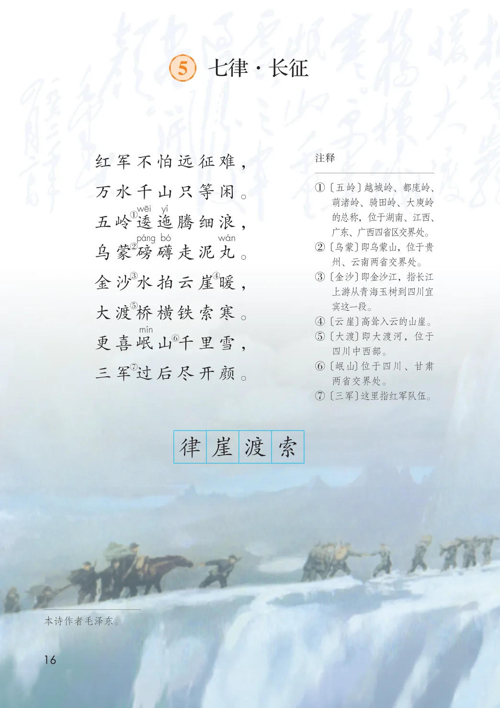
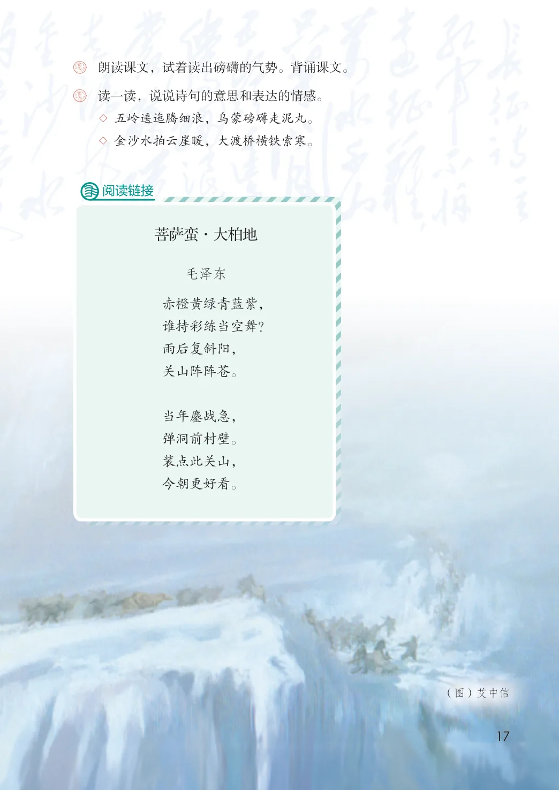

第二单元 · 第 5 课
七律·长征
文字内容 PDF 第 21 页
红军不怕远征难，注释
① 〔五岭〕越城岭、都庞岭、万水千山只等闲。
萌渚岭、骑田岭、大庾岭的总称，位于湖南、江西、广东、广西四省区交界处。② 〔乌蒙〕即乌蒙山，位于贵
①
五岭逶迤腾细浪，
②乌蒙磅礴走泥丸。
州、云南两省交界处。③ 〔金沙〕即金沙江，指长江
③④
金沙水拍云崖暖，
上游从青海玉树到四川宜宾这一段。④ 〔云崖〕高耸入云的山崖。⑤ 〔大渡〕即大渡河，位于
⑤
大渡桥横铁索寒。
更喜岷山千里雪，⑥
四川中西部。⑥ 〔岷山〕位于四川、甘肃
⑦三军过后尽开颜。
两省交界处。⑦ 〔三军〕这里指红军队伍。
本诗作者毛泽东。
生字与词语
律
崖
渡
索
阅读链接
菩萨蛮·大柏地
毛泽东
赤橙黄绿青蓝紫，
谁持彩练当空舞？
雨后复斜阳，
关山阵阵苍。
当年鏖战急，
弹洞前村壁。
装点此关山，
今朝更好看。
（图）艾中信
课后练习
- 朗读课文，试着读出磅礴的气势。背诵课文。
- 读一读，说说诗句的意思和表达的情感。
- ◇ 五岭逶迤腾细浪，乌蒙磅礴走泥丸。
- ◇ 金沙水拍云崖暖，大渡桥横铁索寒。
原版对照
原书页面与全部插图
点击图片可查看大图。

